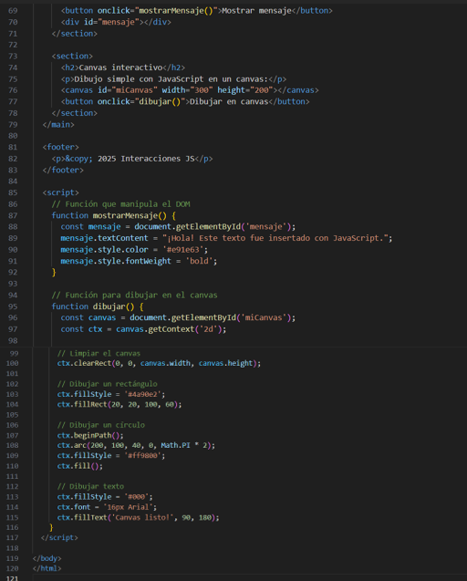

Temas y actividades
Temas aprendidos: Introducción a JavaScript, variables, funciones, control de flujo y manipulación del DOM.
¿Qué es JavaScript?
JavaScript es un lenguaje de programación que permite que las páginas web respondan a las acciones del usuario, como clics, movimientos del mouse o el envío de formularios.
Ejemplos:
- Mostrar un mensaje al hacer clic.
- Cambiar colores al pasar el mouse.
- Validar formularios antes de enviarlos.
¿Para qué sirve?
JavaScript permite:
- Crear sitios web interactivos.
- Desarrollar juegos directamente en el navegador.
- Programar aplicaciones móviles o de escritorio.
- Crear el backend del sitio usando Node.js.
Variables:
Las variables almacenan datos para usarlos más adelante. Se pueden declarar con let, const o var.
let nombre = "Ana";
const edad = 20;
Funciones:
Las funciones son bloques de código que se ejecutan cuando se llaman. Ayudan a organizar el código.
function saludar() { alert("Hola"); }
saludar();
Ejercicios de laboratorio: Interacciones con JavaScript, manipulación del DOM y uso del elemento <canvas>.
Ejemplos:


Resultado obtenido:
Reflexión: Aprendí a darle vida a las páginas web mediante lógica, eventos dinámicos y control de elementos HTML con JavaScript.